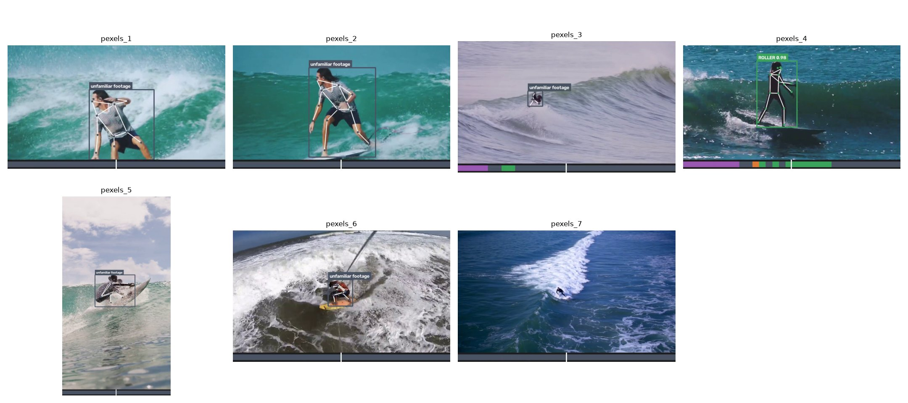
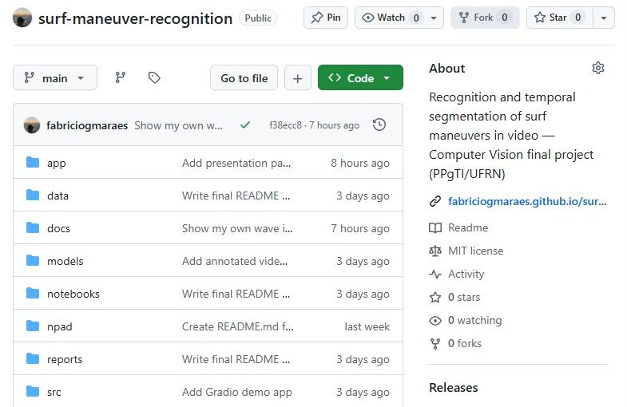

Reconhecendo manobras de surf em vídeoRecognizing surf maneuvers in video
Detecção do surfista, um modelo de vídeo congelado e uma linha do tempo que diz qual manobra aconteceu e quando.Surfer detection, a frozen video model and a timeline that says which maneuver happened and when.
Fabricio Guimarães
Visão ComputacionalComputer Vision (PPGTI3007), Prof. Helton Maia
PPgTI/UFRN, 2026.2
Qual manobra, e em que momento do vídeo?Which maneuver, and when in the video?
As quatro manobrasThe four maneuvers
O que complica para o computadorWhat makes it hard for a computer
- o surfista ocupa uma parte pequena do quadro;
- a câmera acompanha, aproxima e treme;
- água e spray escondem o corpo;
- duas manobras podem diferir só no jeito da virada.
- the surfer fills a small part of the frame;
- the camera pans, zooms and shakes;
- water and spray hide the body;
- two maneuvers can differ only in how the turn unfolds.
linha do tempo saiGoal: video in,
timeline out
1.062 clipes de surf, uma manobra em cada1,062 surf clips, one maneuver each
Clipes por manobra (após a limpeza: 1.056)Clips per maneuver (after cleaning: 1,056)
- Fonte: dataset público do Hugging Face, filmagem lateral de campeonato e de surf livre.Source: public Hugging Face dataset, side-view footage from contests and free surfing.
- Desbalanceado: 4× mais roller que take-off. Por isso a métrica é o macro F1: a nota de cada manobra calculada separada e depois a média, para a classe grande não esconder as pequenas.Imbalanced: 4× more rollers than take-offs. So the metric is macro F1: each maneuver is scored on its own and then averaged, so the big class cannot hide the small ones.
-
Duração dos clipes: 80% entre 1,9 e 3,7 s.Clip length: 80% between 1.9 and 3.7 s.
mediana 2,8 s → tamanho da janela do sistemamedian 2.8 s → the system's window size 1 s1,91.93,73.75 s
O mesmo surfista estava no treino e no testeThe same surfer was in training and in test
- Sessões misturadas. Clipes vizinhos são da mesma sessão: mesmo surfista, praia e câmera. 34 das 36 sessões estavam espalhadas entre treino, validação e teste.
- Quase-duplicatas. O mesmo clipe com outra cor ou marca d'água, um no treino e outro no teste.
- Rótulos conflitantes. 3 vídeos em duas manobras ao mesmo tempo. Removidos.
- Mixed sessions. Neighboring clips come from the same session: same surfer, beach and camera. 34 of the 36 sessions were spread across train, validation and test.
- Near-duplicates. The same clip with another color grade or watermark, one in train and one in test.
- Conflicting labels. 3 videos filed under two maneuvers at once. Removed.
Cada ferramenta tem um motivoEvery tool has a reason
Como um vídeo vira linha do tempoHow a video becomes a timeline
Repetido 50 vezes: o vazamento inflava o resultado em 3 pontosRepeated 50 times: leakage inflated the score by 3 points
Cada clipe é sorteado sozinho: a mesma sessão cai no treino e no teste. O teste fica mais fácil.Each clip is drawn on its own: the same session lands in train and test. The test gets easier.
Sessões inteiras são sorteadas: o teste só tem praias e surfistas que o modelo nunca viu.Whole sessions are drawn: the test only has beaches and surfers the model never saw.
- 50 provas de cada: 5 partes revezando como teste × 10 sorteios. Os números são a média das 50.
- 3 pontos a mais com vazamento, em 10 de 10 repetições: a nota extra vinha de reconhecer a praia, não a manobra.
- Sem vazamento a nota oscila o dobro (± 0,033 × ± 0,018): depende de quais praias caem no teste.
- 50 tests each: 5 parts taking turns as the test × 10 shuffles. The numbers are the mean of the 50.
- 3 extra points with leakage, in 10 of 10 repeats: the extra score came from recognizing the beach, not the maneuver.
- Without leakage the score varies twice as much (± 0.033 vs ± 0.018): it depends on which beaches land in the test.
Bastidor: o StratifiedGroupKFold do scikit-learn gerou só 7 divisões diferentes em 50, então escrevi um divisor próprio.Behind the scenes: scikit-learn's StratifiedGroupKFold produced only 7 distinct splits out of 50, so I wrote my own splitter.
Ler o clipe em ordem não era o que faltavaReading the clip in order was not the missing piece
Como ler: com e sem ordem empatam dentro da variação (±), então o ganho veio de pesar as fatias, não da ordem. Por que a média: é estável, treina em segundos e foi avaliada nas 50 divisões; a atenção só foi medida numa.How to read it: with and without order tie within the spread (±), so the gain came from weighing the slices, not from order. Why the average: it is stable, trains in seconds and was evaluated on all 50 splits; attention was measured on one.
O modelo olha para o surfista, não para a praiaThe model looks at the surfer, not the beach
- Recortar o surfista melhora todas as manobras. Apagar o surfista derruba 20 pontos.
- O take-off não é atalho de cena. Ele acerta até com fotos paradas (0,899) pela postura: deitado, levantando.
- Cropping the surfer helps every maneuver. Erasing the surfer costs 20 points.
- Take-off is not a scene shortcut. It scores well even from still frames (0.899) because of posture: lying down, popping up.

Em vídeos diferentes dos de treino, ele erra com quase 100% de certezaOn footage unlike training, it is wrong with near-100% certainty
| filmagemfootage | o modelo dissethe model said | com o filtrowith the filter |
|---|---|---|
| close em câmera lentaslow-motion close-up | take-off, 90–100% ✗ | barrado ✓flagged ✓ |
| vertical (Reels)vertical (Reels) | take-off / roller ✗ | barrado ✓flagged ✓ |
| drone, de cimadrone, from above | take-off, 99% ✗ | barrado ✓flagged ✓ |
| kitesurf (nem é surf)kitesurfing (not even surf) | roller, 99% ✗ | barrado ✓flagged ✓ |
Por isso criei um filtro: ele compara cada trecho com os clipes de treino mais parecidos. Se está longe demais de todos, marca filmagem estranha em vez de chutar.So I added a filter: it compares each window with the most similar training clips. If it is too far from all of them, it marks unfamiliar footage instead of guessing.
Aplicando num vídeo meu, a aplicação reconheceu o roller com 0,96. Quando eu caí, o filtro barrou; sem ele, a queda virava um 360 com 95%.On a video of my own, the app recognized the roller at 0.96. When I fell, the filter flagged it; without it, the fall became a 360 at 95%.
DemonstraçãoDemo
Doze clipes do conjunto de teste, três de cada manobra, de sessões que o modelo nunca viu.Twelve test-set clips, three per maneuver, from sessions the model never saw. No app ao vivo, os mesmos clipes estão nos exemplos, juntos e separados.In the live app, the same clips are in the examples, together and one by one.
O que ainda não funcionaWhat does not work yet
Todo clipe de treino é uma manobra. Um surfista só deslizando na onda vira roller.Every training clip is a maneuver. A surfer just riding the wave becomes a roller.
Em close, drone ou vídeo vertical o filtro avisa, mas não acerta.On close-ups, drone or vertical video the filter warns, but cannot get it right.
Uma manobra curta se mistura com o que vem depois, como na minha queda.A short maneuver blends with what comes next, like my fall.
O que ficaTakeaways
- A forma de avaliar mudou mais as conclusões do que o modelo. Vazamento e uma divisão só contavam histórias erradas.
- O que funciona: V-JEPA 2 congelado, recorte do surfista e um classificador simples: 0,896 em sessões nunca vistas.
- Próximo passo: construir e compartilhar um dataset de surf mais completo, com mais manobras, mais câmeras e a qualidade da execução. O mais próximo hoje é o SSD (3.200 clipes, só esqueletos).
- How I evaluated changed the conclusions more than the model did. Leakage and a single split told the wrong stories.
- What works: frozen V-JEPA 2, a surfer crop and a simple classifier: 0.896 on unseen sessions.
- Next step: build and share a richer surf dataset, with more maneuvers, more camera styles and execution quality. The closest today is SSD (3,200 clips, skeletons only).

github.com/fabriciogmaraes/surf-maneuver-recognitionCódigo, 11 notebooks, o app e o texto completo (README em inglês e português).Code, 11 notebooks, the app and the full write-up (README in English and Portuguese).
Obrigado.Thank you.

Fabricio Guimarães
github.com/fabriciogmaraes/surf-maneuver-recognition
linkedin.com/in/fabriciogmaraes